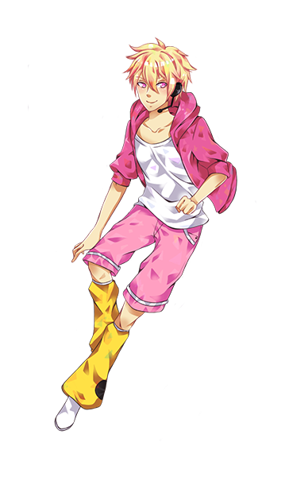

Printto Magicbeat is the first UTAUloid of PRINTmov UTAU and still getting update in Saga 2.
He is well-known as multi-language UTAUloid and also the first Thai VCCV voice library.
Release Date: 29th September 2014
Read more at UTAU Wiki
Japanese
-
Act 1 Normal CV - First Printto Magicbeat voice libraly ever (known as Printto Hopa).
-
Act 1 Power CV - Low quality power style voice.
-
Act 2 - Better oto.ini than Act 1 but still low quality.
-
Act X - First Printto Magicbeat VCV voice library.
-
Rock - VCV Di-pitch. Higher pitch recorded as "power" style.
-
Gentle. - VCV Di-pitch. Higher pitch recorded as "sweet" style.
-
Militant. - Released in 2nd anniversary. Strong clear VCV Di-pitch voicebank.
-
Daydream - (a.k.a. Printto MagicDev) The project is now discontinued.
-
Sharp CV - [ For beginers ] Basic CV system voice library.
-
For Mac - CV + VV compatible with UTAU-Synth. Similar to "Sharp CV".
-
Multi - [ Recommended ] Rock + Gentle + Normal + Whisper. Users may edit prefix map.
-
Speech - This is speeking program for Printto Magicbeat.
English
-
CVVC Lite - Edited from old Thai CVVC.
-
VCCV - First Printto Magicbeat's official English voice library.
-
VCCV 2nd - Released in 2nd anniversary. Better English accent (Hopefully).
Thai
-
Old CVVC - First Printto Magicbeat Thai voice library.
-
CVVC 2016 - Improved Printto Magicbeat Thai voice library.
-
VCCV - Native Thai VCCV.
Korean
-
VCCV - First Printto Magicbeat Korean voice library.
Chinese (NIAONiao)
-
NIAONiao - This voicebank is for NIAONiao program.